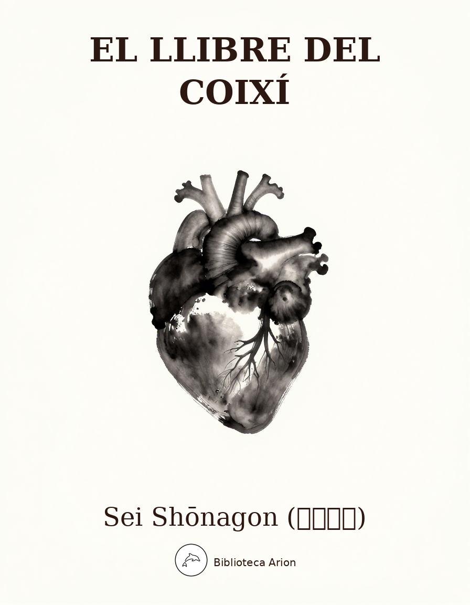

El llibre del coixí
枕草子
El Makura no Sōshi (枕草子, El llibre del coixí) és una obra cabdal de la literatura japonesa clàssica, escrita per Sei Shōnagon, dama de la cort de l'emperadriu Teishi durant el període Heian. Considerat el primer exemple del gènere zuihitsu (随筆, «seguir el pinzell»), el text recull observacions, llistes, anècdotes cortesanes i reflexions estètiques amb una prosa elegant i plena d'enginy. Selecció de 30 seccions representatives.
枕草子 — Makura no Sōshi
Autor: 清少納言 (Sei Shōnagon) Època: c. 1002 dC (període Heian) Font: Text basat en l’edició Sankanbon (三巻本), la versió més estesa i editada del text clàssic. Selecció: 30 seccions representatives
一段 — Haru wa akebono (La primavera és l’alba)
春はあけぼの。やうやう白くなりゆく、山ぎは少しあかりて、紫だちたる雲の、細くたなびきたる。
夏は夜。月のころはさらなり。闇もなほ、蛍の多く飛びちがひたる。また、ただ一つ二つなど、ほのかにうち光りて行くもをかし。雨など降るもをかし。
秋は夕暮れ。夕日のさして、山の端いと近うなりたるに、烏の、寝どころへ行くとて、三つ四つ、二つ三つなど、飛びいそぐさへあはれなり。まいて、雁などの連ねたるが、いと小さく見ゆるは、いとをかし。日入り果てて、風の音、虫の音など、はたいふべきにあらず。
冬はつとめて。雪の降りたるは、いふべきにもあらず。霜のいと白きも、またさらでも、いと寒きに、火など急ぎおこして、炭もて渡るも、いとつきづきし。昼になりて、ぬるくゆるびもていけば、火桶の火も、白き灰がちになりて、わろし。
二段 — Koro wa (Les èpoques)
ころは、正月、三月、四月、五月、七月、八月、九月、十一月、二月、つごもりの夜、闇のころ。
六段 — Daidairi wa (El gran palau)
大内裏は、近衛の御門。内裏は、朔平門。
二十五段 — Nikui mono (Coses odioses)
にくきもの。急ぐ事あるに、来て長言するまらうど。あなづりやすき人ならば、「のちに」とてもやりつべけれど、さすがに心はばかりせらるる人、いとにくし。
硯に髪の入りて、すられたる。また、墨の中に石の、きしきしときしみ鳴りたる。
にはかに病する人のある折に、験者もとむるに、例ある所になくて、他ざまに、たづね歩く、ほど経つるがいと心もとなきに、からうじて待ちつけて、よろこびながら加持せさするに、この頃物の怪にあづかりて困じにけるにや、ゐるままにすなはちねぶり声なる、いとにくし。
二十六段 — Kokoro tokimeki suru mono (Coses que fan bategar el cor)
心ときめきするもの。雀の子飼ひ。ちご遊ばする所の前渡る。よき薫物たきて、ひとり臥したる。唐鏡の少し暗き、見たる。よき男の車とどめて、案内しいるる。
頭洗ひ化粧じて、香ばしうしみたる衣など着たる。ことに見る人なき所にても、心のうちはなほいとをかし。
待つ人などのある夜、雨の音、風の吹きゆるがすも、ふと驚かるる。
二十七段 — Sugisarishi mono (Coses que ja han passat)
過ぎにし方恋しきもの。枯れたる葵。雛遊びの調度。二藍、葡萄染などの、さいでの押されたる。
よき人の手紙の、雨など降りてにじみたる。去年の夏扇。
三十段 — Mese ni kuru mono (Coses elegants)
めでたきもの。唐錦。飾り太刀。作り仏の木画。よき草子の、かき絵うつくしうて、ことばおほかる。
三十二段 — Utukushi ki mono (Coses adorables)
うつくしきもの。瓜にかきたる、ちごの顔。雀の子の、鼠鳴きするに、踊り来る。二つ三つばかりなる、ちごの、急ぎて這ひ来る道に、いと小さき塵のありけるを、目ざとに見つけて、いとをかしげなる指にとらへて、大人などに見せたる。いとうつくし。
頭は尼そぎなる、ちごの、目に髪のおほへるをかきはやらで、うちかたぶきてものなど見たるも、うつくし。
大きにはあらぬ殿上わらはの、装束きたてられて歩くも、うつくし。をかしげなる、ちごの、あからさまに抱きて遊ばしうつくしむ程に、かいつきて寝たる、いとらうたし。
雛の調度。蓮の浮き葉の、いと小さきを、池より取り上げたる。葵のいと小さき。何もなにも、小さきものは、みなうつくし。
三十九段 — Mushi wa (Insectes)
虫は、鈴虫。ひぐらし。蝶。松虫。きりぎりす。はたおり。われから。ひを虫。蛍。
みのむし、いとあはれなり。鬼の生みたれば、親に似て、これも恐しき心あらんとて、親のあやしき衣ひき着せて、「いま、秋風吹かんをりぞ、来んとする。待てよ」といひおきて逃げて去にけるを、風の音を聞き知りて、八月ばかりになれば、「ちちよ、ちちよ」と、はかなげに鳴く、いみじうあはれなり。
四十段 — Ki wa (Arbres)
木は、桂。五葉。さくら。おほとなへ。しなの木。かへで。あすなろ。ねず。檜。
六十八段 — Niwatori no hina no (El pollet)
鶏のひなの、足高に白うをかしげに、衣短なるさまして、ひよひよとかしかましう鳴きて、人の後・前に立ちて歩くもをかし。また、親の、ともに連れ立ちて走るも、みなうつくし。雁の子。瑠璃の壺。
七十二段 — Arimachi no sechie wa (La festa de l’Arimachi)
ありまちの節会は。万のことは、みな尽きて、ただ酔ひ過ぐして、ものの食はぬこそ、あしけれ。
七十六段 — Ha ni akaruki mono (Coses que fan vergonya)
はにあかりきもの。色好みの男の、思ふ人なき。
八十二段 — Kawa wa (Rius)
川は、飛鳥川。大井川。泉川。音無の川。耳敏川。細谷川。たまの川とて、いづれの国にかありけん、たださへなまめかしきに、「ちはやぶる神のいがきに蛙鳴くなり」と聞きたるこそ、いとをかしけれ。
八十三段 — Ike wa (Estanys)
池は、勝間田の池。磐輪の池。贄野の池。ないとの池、いかなる所にあるにか。初瀬に詣づる人の、水飲むとて立ちよるは、おほとのこもりの池とこそは聞くに、いとにくければ。
八十六段 — Sato wa (Llogarets)
里は、ならの都。
百二段 — Osore no mono (Coses que fan por)
おそろしきもの。夜、鳴る雷。近き隣に火事のある。くれなゐの梅。
百四段 — Asamashi ki mono (Coses que desconcerten)
あさましきもの。刺繍しながら、縫い違えたるかた。吉田の社の前なる家の前に立てる松の木、若かりしは、いと寝覚がちなりし心地。
百十七段 — Tuki wa (La lluna)
月は、有明の、東の山ぎはに、細くて出づるほど、いとあはれなり。
百三十段 — Hana wa (Flors)
花は、桜。もちろんのこと。梅は、白きも赤きも。桃の花。柳の花。朝顔。撫子。
百三十一段 — Yo no naka ni naki mono (Coses que no existeixen al món)
世の中になきものにて、ありぬべきもの。姑にほめらるる嫁。また、舅にほめらるる婿。毛のよき銀の毛抜。主ほめする従者。つゆの癖なき人。容貌、心、ありさま、よしと思ふ人の、世に経るに、つゆのいう疵なき。
百四十四段 — Hotoke wa (Budes)
仏は、如意輪。千手。
百五十一段 — Chikaki mono (Coses properes)
近うて遠きもの。宮のべの祭。思はぬはらから。鞍馬の九十九折のみち。正月と十二月と。
百五十二段 — Toki mono (Coses distants)
遠くて近きもの。極楽。舟の道。男女の仲。
百五十五段 — Kashikoki mono (Coses venerables)
かしこきもの。勅の使。
百六十四段 — Naku mono (Coses que ploren)
泣き声にて読みたるもの。経。
百七十六段 — Mono no aware (El pathos de les coses)
ものの哀れ知らぬは、心なき人なり。
百八十五段 — Sashi idete (Coses que sobresurten)
さし出でたるもの。つららの長きが軒に垂りたる。
百九十六段 — Kagami wa (El mirall)
鏡は、はづかしきもの。影のかたちの、うつるなれば。
二百段 — Iyashiki mono (Coses vulgars)
いやしきもの。歯黒きとき、唾をおしはべりたるさま。やすきはひたる蓆。
三百段 — Noborishi mono (Ascensions)
のぼりたるもの。僧綱。山。
三百二段 — Atosaki (Epíleg)
この草子、目に見え、心に思ふことを、人やは見んとすると思ひて、つれづれなる里居のほどに書き集めたるを、あいなう、人のために、便なきいひ過ぐしもしつべき所々もあれば、よう隠し置きたりと思ひしを、心よりほかにこそ漏れ出でにけれ。
宮の御前に内大臣殿の奉りたまひし草子を、「これに何を書かまし。帝の御前には史記といふ書をなん書かせたまへる」などのたまはせしに、「枕にこそは侍らめ」と申ししかば、「さは得てよ」とてたまはせたりしを、あやしきを、こよや何やと、尽きせず多かる紙を書きつくさんとせしに、いと物おぼえぬ事ぞ多かるや。
おほかた、これは、世の中にをかしきこと、人のめでたしなど思ふべき、なほ選り出でて、歌などをも、なにかは、世の人のめでたしと思ひ、憎みなどすべき。ただ、心ひとつに、おのがじし思ふ事を書き付くれば、もの狂ほしきことも多かりけるを、たまさかに人の見るに、「いとめでたし」など、ほめたまふは、うれしくこそあれ。「さても見苦しき」などいふ人もありけるに、はづかしきわざなれど、ただ我が心にをかしきと思ふを書くなり。人に見せんとて書くにもあらねば、めでたしとてほめ、わろしとてそしりても、我はいとうれしからず悲しからず。
Nota: Selecció de 30 seccions representatives del Makura no Sōshi (枕草子), text basat en l’edició Sankanbon (三巻本). La numeració segueix l’edició de Hagitani Boku (萩谷朴). Algunes seccions són completes i d’altres s’han abreujat per raons d’extensió.
El llibre del coixí
Sei Shōnagon (清少納言)
Traduït del japonès clàssic per Biblioteca Universal Arion
Secció 1 — La primavera és l’alba
La primavera és l’alba. Quan la claror es va fent blanca a poc a poc, la cresta de les muntanyes s’enrojola lleugerament i uns núvols púrpura s’estenen en fils prims.
L’estiu és la nit. Les nits de lluna, és clar. Però també la foscor, quan les cuques de llum volen pertot entrecreuant-se. I fins i tot quan n’hi ha només una o dues, que llueixen dèbilment tot passant, és encantador. També ho és quan plou.
La tardor és el capvespre. Quan el sol ponent il·lumina de biaix i la cresta de les muntanyes es fa molt propera, els corbs que tornen als nius volant de pressa, de tres en tres, de quatre en quatre, de dos en dos, de tres en tres, tot això commou. I encara més, quan una filera d’oques salvatges travessa el cel, tan petites que quasi no es veuen: és del tot encantador. Quan el sol s’ha post del tot, el so del vent, el cant dels insectes… no cal ni dir-ho.
L’hivern és el matí d’hora. Quan ha nevat, no cal ni parlar-ne. Quan la gebrada és molt blanca, o fins i tot sense ella, quan fa molt de fred i s’afanyen a encendre el foc i porten les brases d’una cambra a l’altra: és del tot escaient. Però quan arriba el migdia i la fred s’apaivaga, el foc del braser es va cobrint de cendra blanca i fa mala impressió.
Secció 2 — Les èpoques
Les millors èpoques: el primer mes, el tercer, el quart, el cinquè, el setè, el vuitè, el novè, l’onzè. El segon mes, la darrera nit, les nits fosques.
Secció 6 — El gran palau
Del gran palau, la porta de Konoe. Del palau interior, la porta de Sakuhei.
Secció 25 — Coses odioses
Coses odioses. Quan tens alguna cosa urgent a fer i ve un visitant que s’entreté parlant llargament. Si fos algú a qui es pot tractar sense cerimònies, li diries «ja en parlarem un altre dia» i l’enviaries a passeig; però si és algú que et cohibeix, és molt odiós.
Quan un cabell cau dins el tinter i es barreja amb la tinta. O quan hi ha una pedreta dins el bloc de tinta que grinyola i recargola.
Quan algú cau malalt de sobte i envies a buscar l’exorcista, però no és al lloc habitual i has de buscar-lo pertot arreu: el temps que passa és molt angoixant. Quan per fi el trobes i, tot content, el fas començar les pregàries, resulta que deu estar esgotat de tractar esperits malignes darrerament, perquè tan bon punt s’asseu ja se li sent la veu ensopida: és molt odiós.
Secció 26 — Coses que fan bategar el cor
Coses que fan bategar el cor. Un pardal de cria que s’alimenta a mà. Passar per davant d’un lloc on juguen infants. Cremar un bon encens i jeure sola. Un mirall xinès, una mica fosc, on un es mira. Un home distingit que atura el carruatge i demana ser anunciat.
Rentar-se els cabells, empolinar-se i posar-se una roba impregnada de bona fragància. Fins i tot quan no hi ha ningú que t’observi, el cor per dins se sent igualment encantador.
Quan esperes algú, a la nit, el so de la pluja, el vent que sacseja les coses: de sobte et sobresaltes.
Secció 27 — Coses que ja han passat
Coses que fan enyorar el passat. Unes fulles d’aoi marcides. Les joguines d’una casa de nines. Un retall de tela tenyida de dues blavors o de raïm, que ha quedat premsat.
Una carta d’algú estimat, tacada perquè la pluja l’ha mullat. Un ventall de l’estiu passat.
Secció 30 — Coses esplèndides
Coses esplèndides. El brocat xinès. Una espasa cerimonial. Una estàtua de Buda amb fusta pintada. Un bon quadern amb belles il·lustracions i molt de text.
Secció 32 — Coses adorables
Coses adorables. La cara d’un infant dibuixada en un meló. Un pardaló de cria que arriba saltant quan se’l crida fent soroll de ratolí. Un infant de dos o tres anys que ve gatejant de pressa i, en el camí, descobreix amb la seva mirada aguda una moteta de pols diminuta, l’agafa amb aquells dits tan graciosos i l’ensenya als grans: és del tot adorable.
Un infant amb els cabells tallats com una monja, que no s’aparta els cabells que li cauen sobre els ulls i inclina el cap per mirar alguna cosa: també és adorable.
Un patge de la cort no gaire gran, tot abillat amb el vestit cerimonial, caminant solemne: és adorable. Un infant encantador que t’han posat als braços un moment per jugar-hi i que s’hi agafa fort i s’adorm: és del tot tendrament adorable.
Les joguines d’una casa de nines. Un full de lotus flotant, ben petit, que han tret de l’estany. Les fulles d’aoi ben menudes. Totes les coses, absolutament totes les coses petites són adorables.
Secció 39 — Insectes
Insectes. El grill campaner. La cigala de la tarda. La papallona. El grill del pi. El grill dels camps. El teixidor. El warekaraoke. La llagosta de foc. La cuca de llum.
El cuc del sac és molt commovedor. Diuen que el va parir un dimoni i que, per por que la cria tingués un cor terrible com el del pare, li va posar una roba miserable i li va dir: «Quan bufi el vent de la tardor, vindré a buscar-te. Espera’m», i va fugir. I el cuc, que reconeix el so del vent, quan arriba el vuitè mes crida «pare, pare!» d’una manera tan fràgil que commou profundament.
Secció 40 — Arbres
Arbres. El katsura. El pi de cinc agulles. El cirerer. L’ohotonae. L’arbre de Shinano. L’auró. L’asunaro. El ginebre. El xiprer.
Secció 68 — El pollet
Un pollet de gallina, amb les potes llargues, tot blanc i encantador, amb l’aspecte d’algú que porta una roba curta, piulant sense parar: és encantador quan va amunt i avall darrere i davant de la gent. I la mare gallina, corrent amb tots els pollets al darrere: tot plegat és adorable. El cabridet d’oca salvatge. El gerro de lapislàtzuli.
Secció 72 — La festa de l’Arimachi
La festa de l’Arimachi. Tot s’ha esgotat ja, i només resta emborratxar-se i no menjar res: això és deplorable.
Secció 76 — Coses que fan vergonya
Coses que fan vergonya. Un home galant que no estima ningú.
Secció 82 — Rius
Rius. El riu Asuka. El riu Ōi. El riu Izumi. El riu sense So. El riu de l’Oïda Fina. El riu de la Vall Estreta. Del riu Tama, no sé en quin país deu ser, però ja el nom sol és elegant, i sentir que «les granotes canten vora la tanca sagrada dels déus impetuosos» és del tot encantador.
Secció 83 — Estanys
Estanys. L’estany de Katsumata. L’estany d’Iwawa. L’estany de Nieno. L’estany de Naito — em pregunto on deu ser. La gent que pelegrina a Hase i s’hi atura per beure aigua: em diuen que es diu l’Estany del Gran Retirament, i la cosa em desagrada molt.
Secció 86 — Llogarets
Llogarets. L’antiga capital de Nara.
Secció 102 — Coses que fan por
Coses que fan por. Un llamp que trona de nit. Un incendi a la casa del veí. Les prunes vermelles.
Secció 104 — Coses que desconcerten
Coses que desconcerten. Fer un brodat i adonar-se que s’ha cosit al revés. El pi que s’aixeca davant la casa que hi ha enfront del santuari de Yoshida: quan era jove, recordo que em desvetllava sovint.
Secció 117 — La lluna
La lluna. La lluna de l’alba, quan surt prima per la cresta de les muntanyes de l’est: commou profundament.
Secció 130 — Flors
Flors. El cirerer, és clar. La pruna, tant la blanca com la vermella. La flor del préssec. El salze en flor. La corretjola. El clavell.
Secció 131 — Coses que no existeixen al món
Coses que haurien d’existir al món però no existeixen. Una nora lloada per la sogra. I també un gendre lloat pel sogre. Unes pinces de plata amb bon pèl. Un criat que lloa el seu senyor. Una persona sense cap defecte. Algú que un considera perfecte d’aspecte, cor i maneres i que passa tota la vida sense la més mínima taca.
Secció 144 — Budes
Budes. El Nyoirin. El de les mil mans.
Secció 151 — Coses properes
Coses properes i alhora llunyanes. La festa de Miyano-be. Germans que no s’estimen. Els noranta-nou revolts del camí de Kurama. El primer mes i el dotzè.
Secció 152 — Coses distants
Coses llunyanes i alhora properes. El paradís. El camí del mar. La relació entre home i dona.
Secció 155 — Coses venerables
Coses venerables. L’enviat imperial.
Secció 164 — Coses que ploren
Coses que es llegeixen amb veu ploranera. Els sutres.
Secció 176 — El pathos de les coses
Qui no coneix el pathos de les coses és una persona sense cor.
Secció 185 — Coses que sobresurten
Coses que sobresurten. Un caramell llarg que penja de la cornisa.
Secció 196 — El mirall
El mirall és un objecte que fa vergonya. Perquè hi reflecteix la forma de la pròpia ombra.
Secció 200 — Coses vulgars
Coses vulgars. L’aspecte d’algú que escup negre quan s’està tenyint les dents. Una estora barata posada per terra.
Secció 300 — Ascensions
Coses que han pujat. Un monjo de rang alt. Les muntanyes.
Secció 302 — Epíleg
Aquests quaderns, les coses que veia amb els ulls i pensava amb el cor, les vaig anar escrivint creient que ningú no les miraria, durant aquells dies ociosos al meu retir; i com que hi ha llocs on he dit coses inconvenients que podrien molestar la gent, els he amagat ben bé — però, contra la meva voluntat, han acabat sortint a la llum.
L’emperadriu va rebre del ministre de l’Interior uns quaderns en blanc i va preguntar: «Què hi hauríem d’escriure? A Sa Majestat l’Emperador li han copiat les Memòries Històriques de la Xina.» Jo vaig respondre: «Un coixí seria el millor», i ella va dir: «Doncs queda’t-els» i me’ls va donar. I en aquells quaderns estranys, on hi cabia de tot, vaig voler omplir tota aquella munió de paper, i hi ha moltes coses que no tenen gaire sentit.
En general, he triat les coses que al món són encantadores i que la gent hauria de trobar admirables, i també poemes i d’altres coses; no hi ha res que el món hagi de trobar admirable o odiós. Simplement, com que he escrit el que jo sola pensava, cadascú a la seva manera, hi ha moltes coses de boja; i quan algú ho veu de tant en tant i diu «és admirable», me n’alegro. Però quan algú diu «és lletjot», tot i que em fa vergonya, jo no faig més que escriure allò que trobo encantador. Com que no ho he escrit perquè la gent ho vegi, que lloïn el que és bo i critiquin el que és dolent: a mi ni m’alegra ni m’entristeix.
Traducció de domini públic. Selecció de 30 seccions representatives del Makura no Sōshi (枕草子), basada en l’edició Sankanbon (三巻本).
Notes
Sobre la selecció de seccions
El Makura no Sōshi conté entre 185 i 326 seccions segons l’edició. Aquesta traducció ofereix una selecció de 30 seccions representatives que cobreixen els principals tipus de text de l’obra: llistes (mono wa), observacions estètiques, anècdotes cortesanes i reflexions personals. La numeració segueix l’edició de Hagitani Boku (萩谷朴) basada en el manuscrit Sankanbon (三巻本).
↩ Tornar al textEl concepte d'*okashi*
El terme をかし (okashi) és el concepte estètic central de l’obra. S’ha traduït principalment com «encantador», però el seu camp semàntic inclou «enginyós», «graciós», «agradable» i «divertit». Contrasta amb l’aware (もののあはれ) que domina el Genji Monogatari de Murasaki Shikibu: mentre l’aware expressa melangia davant l’efímer, l’okashi celebra la vivacitat i l’enginy.
↩ Tornar al textTraducció de *utsukushi*
En japonès clàssic, うつくし (utsukushi) no significa «bonic/bonica» en el sentit modern, sinó «adorable», «que desperta tendresa», especialment davant d’allò petit i delicat. S’ha traduït com «adorable» per preservar aquest matís.
↩ Tornar al textL'epíleg i l'origen del títol
L’última secció (302) explica com va néixer l’obra: l’emperadriu Teishi va donar uns quaderns en blanc a Sei Shōnagon i li va preguntar què hi hauria d’escriure. La resposta «un coixí» (makura) fa referència als quaderns que es guardaven dins els coixins de fusta japonesos (makura) per anotar-hi pensaments privats.
↩ Tornar al textSobre el text original
El text japonès clàssic és extremadament condensat. Una frase com 春はあけぼの (literalment «primavera [tema] alba») requereix expansió considerable en català per ser intel·ligible. La ràtio d’expansió japonès clàssic→català és d’aproximadament 5:1, cosa que és normal i no indica addicions al contingut.
↩ Tornar al text